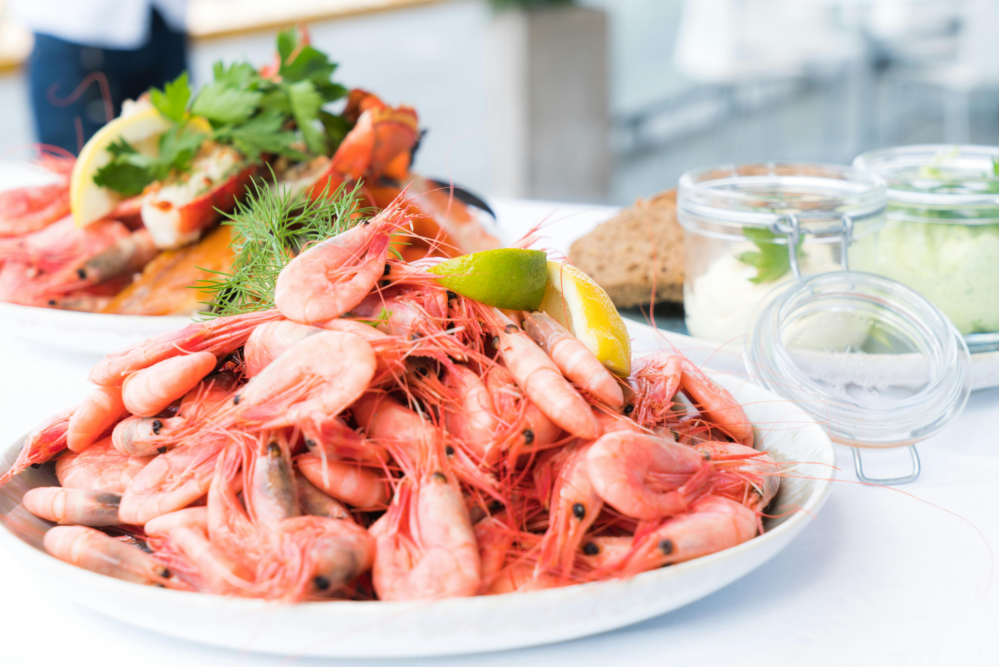
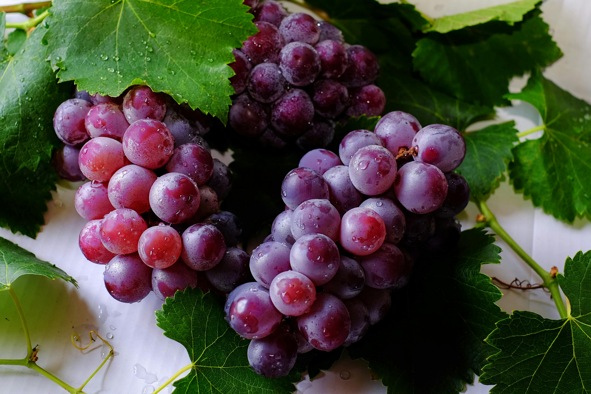

Classes of food
carbohydrate
Carbohydrate molecules are made up of hydrogen atoms, oxygen, and carbon. They can be classified according to the number of monomer units in them.
Therefore, they can be divided into polysaccharides, monosaccharides, and disaccharides. Examples of carbohydrate foods are;
- rice

- bread

- yam

- corn
- wheat
protien
Protein molecules comprise hydrogen, oxygen and hydrogen, carbon, and nitrogen. This nitrogen is an essential part of the amino acids needed for our body.
Every molecule of protein is made up of thousands of amino acids. Our body needs these elements to create new proteins and maintain the existing ones. Examples of protein foods are;
- beef

- tuna

- milk

- turkey
- nut butter
fat & Oil
One molecule of fat is usually made of several fatty acids. These fatty acids are made of long chains of carbon and hydrogen atoms. All fats can be divided into unsaturated and saturated.
Fats regulate energy and help with temperature regulation and vitamin absorption. Fats exist in various foods. Examples of fatty foods are;
- dark chocolate

- nut

- fatty fish

- dairy products
- vegetables
minerals
Minerals can be defined as chemical elements that are needed by living things. Elements are less needed for our body, but they are also essential to keeping us healthy.
Minerals represent various functions like building blocks for our muscles, bones, and teeth, carrying oxygen in our body, keep fluids balanced. Examples of mineral foods are;
- shellfish

- nut

- whole grain

- potassium
- zinc
fibre
Fiber is defined as a type of carbohydrate that is not absorbed by human beings. Fiber in the diet is usually made up of cellulose. It’s a large carbohydrate that can’t be digested by our body because it lacks enzymes.
Fiber in the diet is usually made up of cellulose. It’s a large carbohydrate that can’t be digested by our body because. Examples of fibre foods are;
- Lentil

- kidney beans

- barley

- broccoli
- oats
vitamins
Vitamins are another nutrient that is not needed in large quantities but plays an essential role in our body
. Examples of vitamins include thiamine, riboflavin, niacin, pantothenic acid, biotin, pyridoxine, folic acid, cobalamin, and ascorbic acid. Examples of vitamin foods are;
- grape

- orange

- apple

- lime
- pineapple
Water
Water is an essential part of our food. Human is essentially 80% water.
Therefore, we need water to keep that balance to survive and stay healthy. Fortunately, water can be found in any product. Examples of food containing water are:
- watermelon

- water

- lettuce